A visible rotor connects heat transfer, rarefied gas dynamics and video measurement.
Measure how illumination and thermal history change rotation.
MIE 402 · Lecture 07 · Prof. Ehsan Roohi · Fall 2026
2. Why test a sealed radiometer?
Explanation
Light heats the vanes unevenly. The residual gas transfers momentum to their surfaces and creates a torque.
We measure rotor speed, illuminance and outer-glass temperature. The sealed bulb leaves internal pressure and vane temperatures unknown.
Changing lamp distance changes the thermal input. A comparison of flow regimes comes from the research models.
3. The equipment on our bench
Explanation
Commercial sealed radiometer, LED lamp, lux meter, glass-surface thermometer and Chronos camera.
Use one identified bulb and one lamp at fixed power for each distance series. The pilot photo shows multiple bulbs being screened.
4. Pilot video: place the lamp and lux meter
Explanation
Aim at rotor height. Measure the gap from the light-emitting face to the nearest glass surface.
For the lux reading, put the sensor at the rotor position facing the lamp, then return the bulb to its mark.
Click image to play the course video
5. Pilot video: find the clip and frame numbers
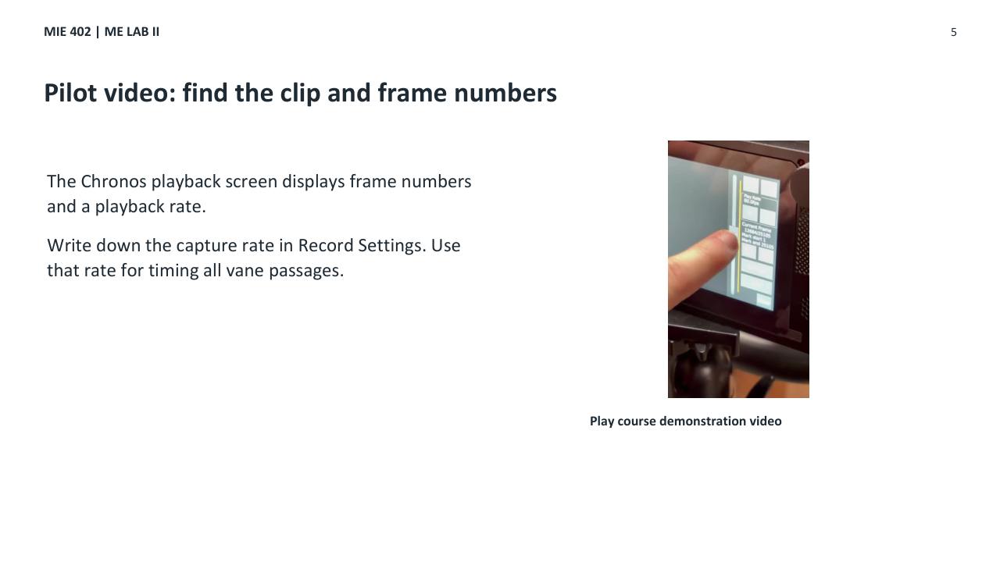
Explanation
The Chronos playback screen displays frame numbers and a playback rate.
Write down the capture rate in Record Settings. Use that rate for timing all vane passages.
Click image to play the course video
6. What can we learn from four short clips?
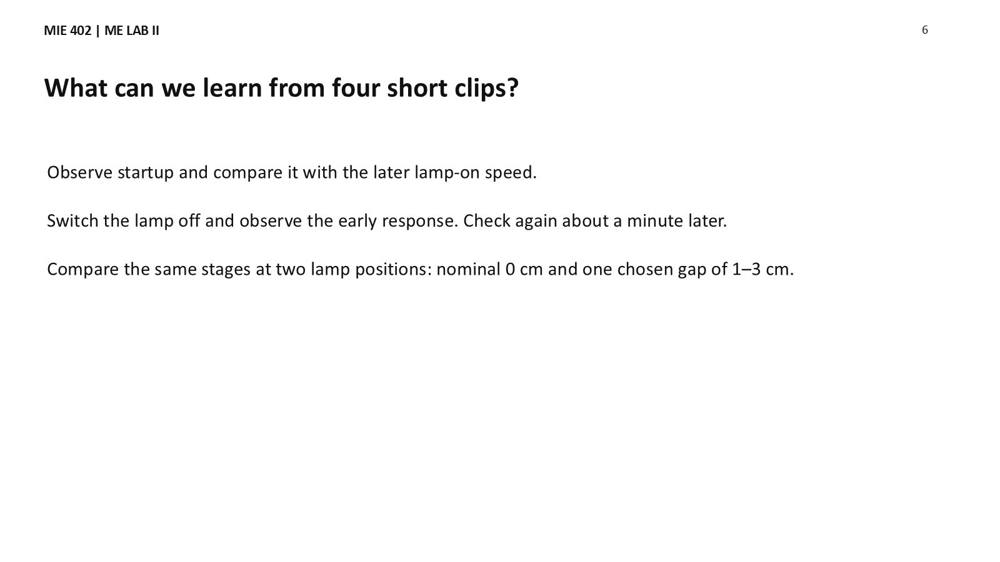
Explanation
Observe startup and compare it with the later lamp-on speed.
Switch the lamp off and observe the early response. Check again about a minute later.
Compare the same stages at two lamp positions: nominal 0 cm and one chosen gap of 1–3 cm.
7. How heated vanes generate force
Explanation
force
Near the edge
Hot face: red Cooler face: blue
Molecular recoil
Collisions near an edge
The dark face usually absorbs more light. Molecules leaving the hotter face have greater average speed. The change in molecular momentum gives an opposite impulse to the vane. In this heated-vane model, the net force points from hot to cold. Acting at a lever arm, it produces torque: the white face leads.
Dashed arrows: incoming molecules. Longer outgoing arrows: greater speed. Simplified mechanism; gas collisions and edges also matter.
8. Flow regimes by Knudsen number
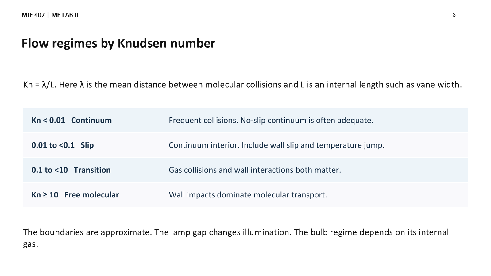
Explanation
Kn = λ/L. Here λ is the mean distance between molecular collisions and L is an internal length such as vane width.
The boundaries are approximate. The lamp gap changes illumination. The bulb regime depends on its internal gas.
9. Small and large Kn give different force patterns
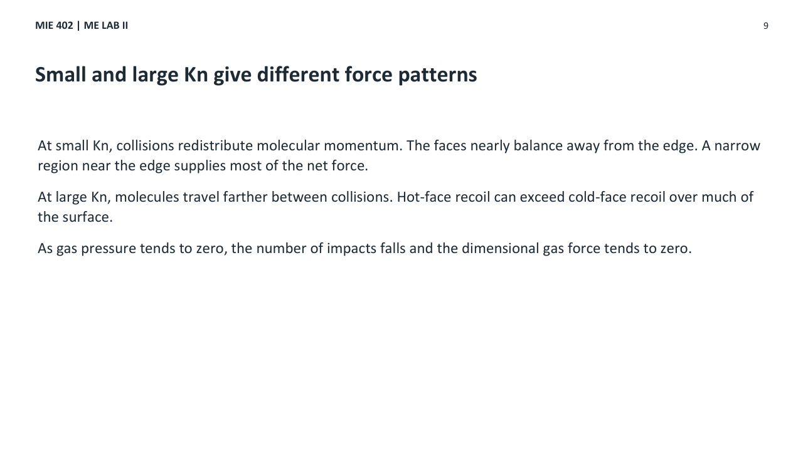
Explanation
At small Kn, collisions redistribute molecular momentum. The faces nearly balance away from the edge. A narrow region near the edge supplies most of the net force.
At large Kn, molecules travel farther between collisions. Hot-face recoil can exceed cold-face recoil over much of the surface.
As gas pressure tends to zero, the number of impacts falls and the dimensional gas force tends to zero.
10. Rotation speed depends on gas pressure
Explanation
The book reports a speed maximum at an intermediate pressure. As pressure tends to zero, fewer molecules strike the vanes. For bounded temperatures, the dimensional gas force tends to zero. This is a speed plot, not a force plot. Its measurements do not extend to zero pressure.
11. What changes in the transition regime?
Explanation
At Kn of order one, gas collisions and wall interactions both affect the stress. Vane edges, gaps and surface reflection can change the result.
Lotfian and Roohi studied heated vanes in patterned channels. Their zigzag case produced strong flow while the net radiometric force was zero.
Rotor speed reflects both driving torque and losses. The peak force and peak speed can occur under different conditions.
12. A frame number becomes a physical time
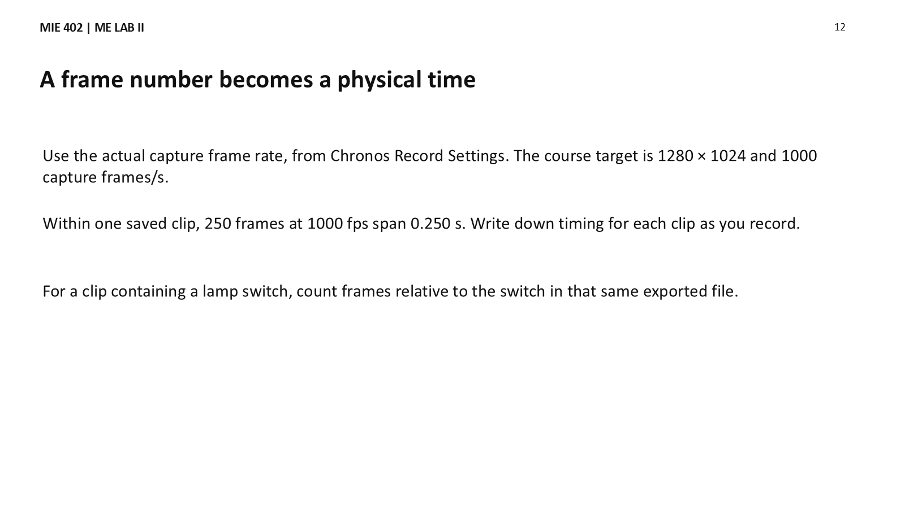
Explanation
Use the actual capture frame rate, from Chronos Record Settings. The course target is 1280 × 1024 and 1000 capture frames/s.
Within one saved clip, 250 frames at 1000 fps span 0.250 s. Write down timing for each clip as you record.
For a clip containing a lamp switch, count frames relative to the switch in that same exported file.
13. What does p count? Watch one complete revolution
Explanation
p = number of selected passage events in ONE full turn.
Reference line
Reference line
p = 1
Follow ONE recognizable vane.
Count only its return to the reference line.
p = 4
Count ALL FOUR equivalent vanes.
Verify four crossings per full turn in the movie.
14. Count intervals, not the number of marks
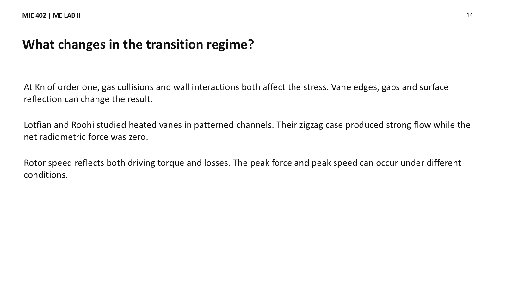
Explanation
Example: mark five successive vane passages at the same reference line.
2. Apply the torque balance, with constant driving torque τ₀.
I d ω/ dt = τ₀ − b ω
I: rotor moment of inertia [kg·m²].
3. Divide by I and define the two useful parameters.
d ω/ dt + ω/ Tₘ = ω ∞ / Tₘ
Tₘ = I/b; ω ∞ = τ₀/ b
Tₘ [s]: response time. ω ∞ [rad/s]: final speed when driving and resisting torques balance.
19. What does the time constant mean?
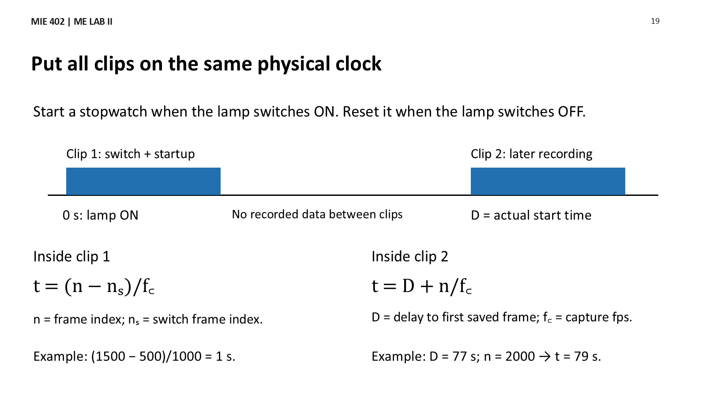
Explanation
For constant τ₀ and b, the previous equation has this solution:
ω( t) = ω ∞ + (ω₀ − ω ∞ ) exp(−t/Tₘ)
ω₀ is the speed at t = 0. From rest, ω₀ = 0.
ω( t)/ ω ∞ = 1 − exp(−t/Tₘ)
After Tₘ: 63% of final speed. After 3Tₘ: about 95%.
The real vanes also warm up. Changing thermal torque can make measured startup differ from this constant-torque approximation.
20. How to estimate an effective decay time
Explanation
After light-off, use a measured interval with decreasing speed and no reversal.
1. Plot q = ln[ω(t)/ω ref ] against time.
ω ref is the first positive speed in that interval. t₀ is its time.
2. If the points follow a straight line, fit its slope s.
q ≈ −(t − t₀)/T; T = −1/s
Example: s = −0.05 s⁻¹ gives T = 20 s.
q
time t [s]
Illustration only
Curved trend, stopped rotor or too few points? Report the observation; do not force a fit.
Exponential decay becomes a straight line after ln.
21. Only TWO lamp positions per group
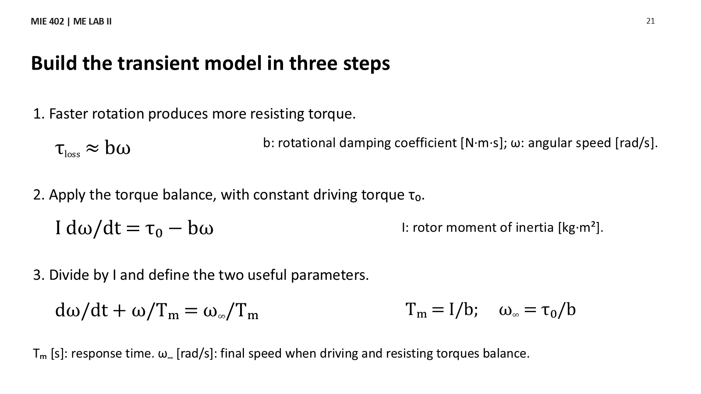
Explanation
Use the same identified radiometer and the same lamp power for both tests.
Test A: immediately beside the lamp
Nominal gap 0 cm: bring the bulb alongside the lamp without pressing the glass. Record the actual gap from emitting face to nearest glass.
Test B: ONE chosen gap between 1 and 3 cm
Choose one distance (for example, 2 cm). Record it. Do not test every distance.
Start each test with the rotor stopped and the bulb cooled near room temperature. Measure lux and glass temperature. No additional repeat is required.
22. Measure vane dimensions from a phone photo
Explanation
1. Lamp OFF; rotor stopped. Photograph one vane face-on.
2. Place a millimetre ruler beside the bulb, at approximately the same depth as that vane.
3. Open the photo in ImageMeter (Android), or use ImageJ on a computer for either phone.
4. Set the scale using 10 mm on the ruler. Measure the vane height H and width W; save the marked photo.
Report an image-based estimate: curved glass causes refraction that an external ruler cannot fully correct. Do not open the bulb.
TOP VIEW: position the ruler
Vane
Ruler
Same depth as vane
Phone
23. For EACH position: three clips, plus one if needed
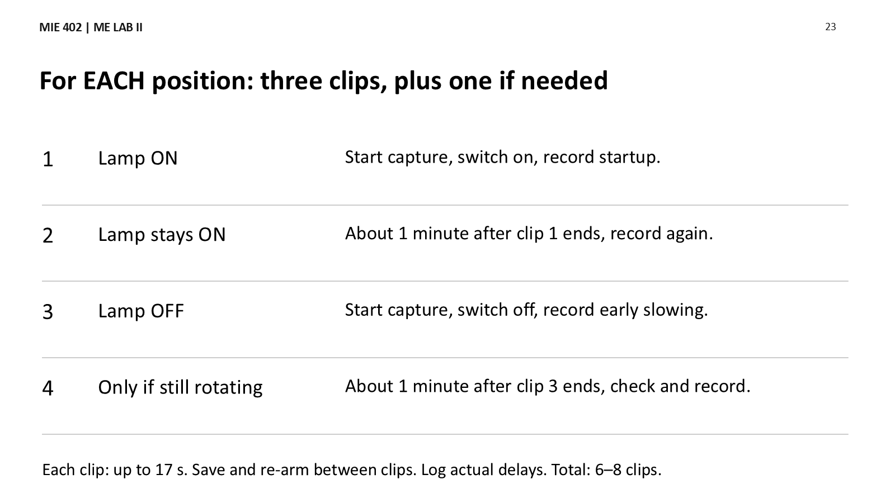
Explanation
1
Lamp ON
Start capture, switch on, record startup.
2
Lamp stays ON
About 1 minute after clip 1 ends, record again.
3
Lamp OFF
Start capture, switch off, record early slowing.
4
Only if still rotating
About 1 minute after clip 3 ends, check and record.
Each clip: up to 17 s. Save and re-arm between clips. Log actual delays. Total: 6–8 clips.
24. Clips 1 and 2 measure startup and later speed
Explanation
Clip 1: start capture with the lamp off. Switch it on immediately. Save the film and record the switch frame.
Stop the recording and save/re-arm the camera. Leave the lamp on at the same setting.
Clip 2: record again about one minute after clip 1 ends. Log the actual time from light-on to the first saved frame.
Each recording lasts up to 17 s. Stop capture, save, and re-arm before the next clip.
25. Clips 3 and 4 measure what happens after light-off
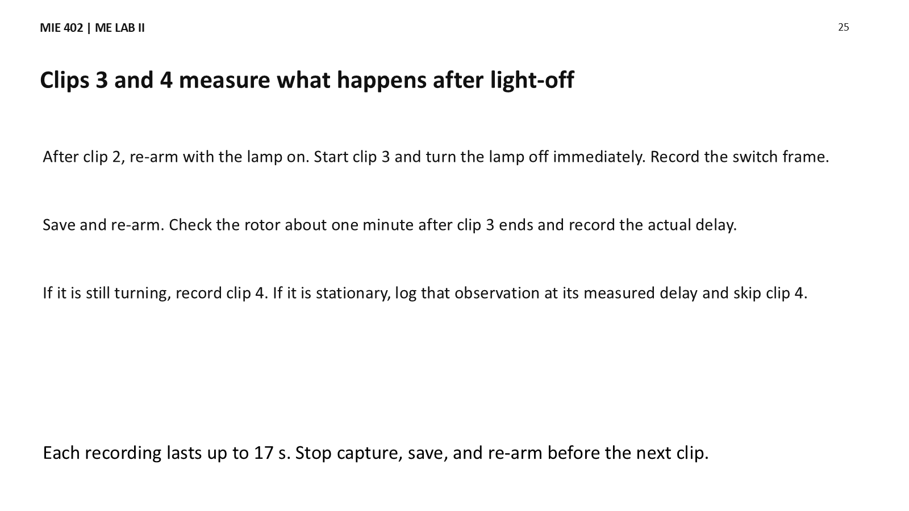
Explanation
After clip 2, re-arm with the lamp on. Start clip 3 and turn the lamp off immediately. Record the switch frame.
Save and re-arm. Check the rotor about one minute after clip 3 ends and record the actual delay.
If it is still turning, record clip 4. If it is stationary, log that observation at its measured delay and skip clip 4.
Each recording lasts up to 17 s. Stop capture, save, and re-arm before the next clip.
26. Record the information needed for analysis
Explanation
For each run: bulb ID, lamp gap, lux, glass temperature before/after, and the actual capture fps.
For each clip: filename, p, and the zero-based switch frame or actual delay. Record stationary or insufficient when appropriate.
Check the vane edges in Playback. Save as H.264 MP4 with the text overlay off and keep the original clip files.
27. Mark passages in each exported movie
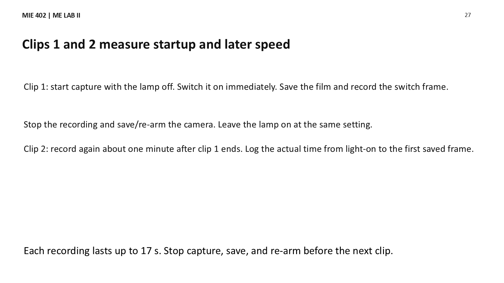
Explanation
Run Mark_Lab6_Passage_Frames.m. Arrows navigate, Space marks, Backspace undoes, and Q saves the passage CSV.
Step one frame at a crossing. Verify p and check all unusual intervals against the movie.
Use one passage CSV per clip. Three valid crossings provide two intervals. Mark a clip with too few crossings as insufficient.
28. MATLAB: run these three scripts in order
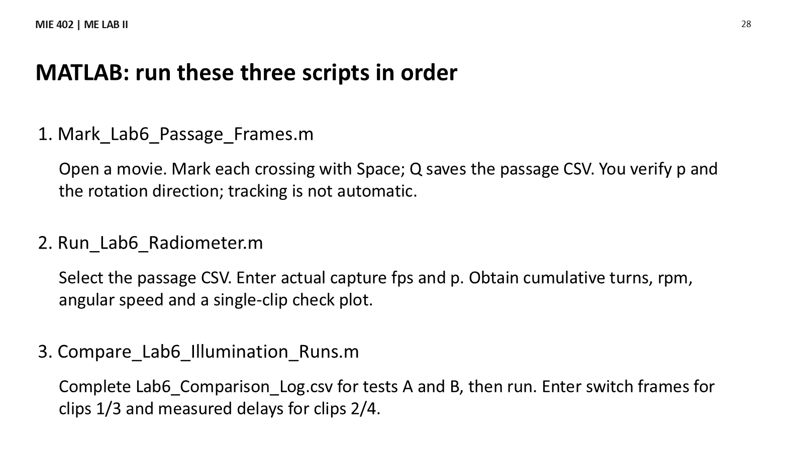
Explanation
1. Mark_Lab6_Passage_Frames.m
Open a movie. Mark each crossing with Space; Q saves the passage CSV. You verify p and the rotation direction; tracking is not automatic.
2. Run_Lab6_Radiometer.m
Select the passage CSV. Enter actual capture fps and p. Obtain cumulative turns, rpm, angular speed and a single-clip check plot.
3. Compare_Lab6_Illumination_Runs.m
Complete Lab6_Comparison_Log.csv for tests A and B, then run. Enter switch frames for clips 1/3 and measured delays for clips 2/4.
29. What you enter; what MATLAB calculates
Explanation
YOU ENTER
Passage frames and verified p. Actual capture fps. Switch frame or actual delay. Test A/B, gap, lux and clip status.
MATLAB CALCULATES / SAVES
Number of intervals and elapsed time. rpm and angular speed in rad/s. Mean speed for each recorded clip. Comparison plots and CSV tables.
You review flagged intervals and identify stops or reversals. The scripts do not fit decay time T automatically or infer pressure, Kn or vane size.
30. What the report should show
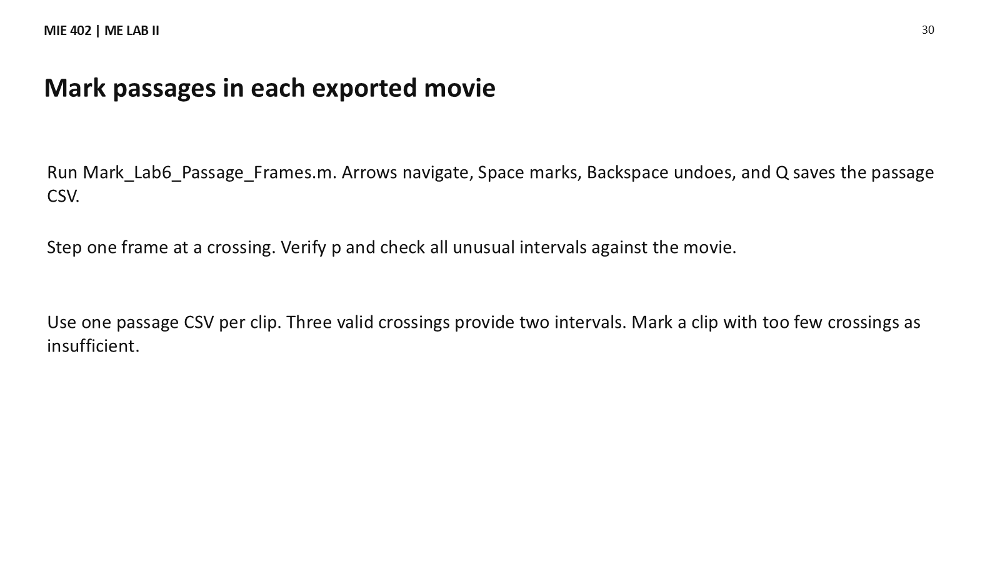
Explanation
Show the lamp gap, lux, glass temperatures, and speed summaries by stage. Compare the two lamp positions.
Plot measured passage speeds in their actual time windows. Compare late lamp-on speed across gaps and report the light-off behavior.
Relate the trends to changing thermal contrast and losses. Give an effective decay time only when the recorded intervals support a fit.
31. Molecular Monte Carlo: the physical idea
Explanation
Sample molecules striking two faces at different temperatures.
Each collision transfers momentum. Average many events to estimate a pressure difference.
A full rotor model also needs edges, gas collisions, confinement and heat transfer.
32. The Monte Carlo algorithm
Explanation
Replace a difficult average by many samples from the physical collision distribution.
The random seed makes a realization reproducible. More samples reduce sampling scatter; the physical assumptions remain the same.
33. Why wall-crossing velocities need special sampling
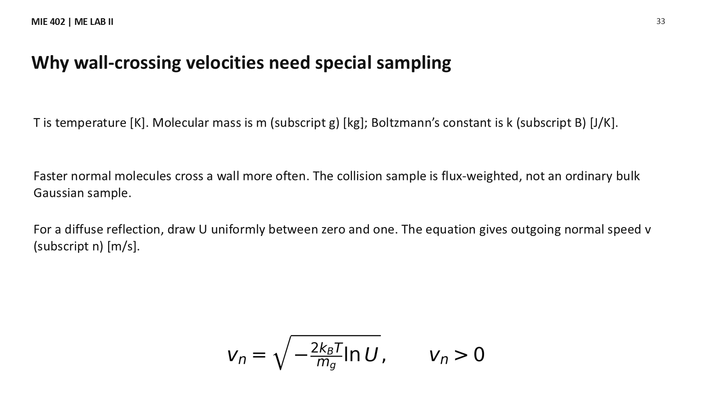
Explanation
T is temperature [K]. Molecular mass is m (subscript g) [kg]; Boltzmann’s constant is k (subscript B) [J/K].
Faster normal molecules cross a wall more often. The collision sample is flux-weighted, not an ordinary bulk Gaussian sample.
For a diffuse reflection, draw U uniformly between zero and one. The equation gives outgoing normal speed v (subscript n) [m/s].
34. From molecular impulse to mean wall force
Explanation
Each collision transfers normal impulse j (subscript n) [kg m/s], from the incident and outgoing normal speed magnitudes [m/s].
Γ is the number of incident molecules per area per time [m⁻² s⁻¹]. Wall pressure P [Pa] is incident flux times mean impulse per collision.
Compare the hotter and colder faces under the same ideal incident reservoir. Define positive force from hot toward cold.
35. The analytical check for the molecular activity
Explanation
T is temperature [K]; subscripts g, h and c mean reservoir, hot wall and cold wall.
P is pressure (subscript g: reservoir). a is diffuse-reflection fraction, not optical absorptivity.
ΔP is hot-face minus cold-face pressure. Compare MC with the analytical expectation below.
36. Why the number of molecular samples matters
Explanation
N is the number of sampled collision events. Each plotted realization uses nested prefix averages.
Independent events with finite variance give sampling error that decreases approximately as one over the square root of N.
About four times as many samples are needed to halve that error. More samples do not supply missing edge or gas-collision physics.
37. Required activity in the Pre-Lab 6 notebook
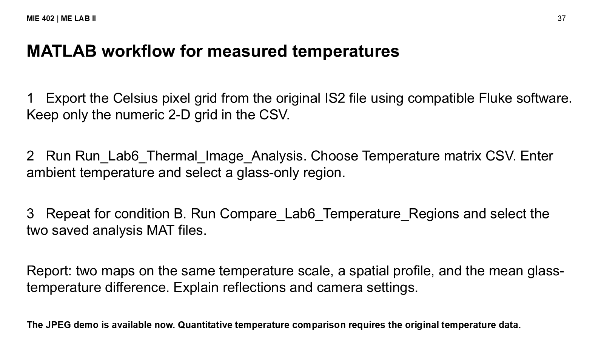
Explanation
Run Q6 in the same Colab notebook as Q1–Q5. It explains the algorithm and implements the molecular sampling.
Submit the velocity-distribution and force-versus-temperature figures. Discuss equal temperatures, reversal, reflection fraction and sample count.
Run the two thermal-state examples. Explain why warmer faces can have a smaller temperature contrast and weaker driving force.
38. Connecting the molecular activity to your measured runs
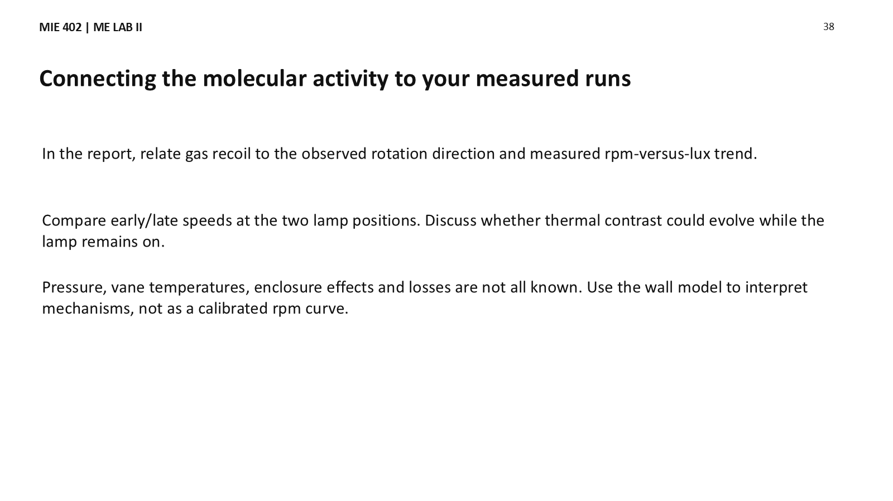
Explanation
In the report, relate gas recoil to the observed rotation direction and measured rpm-versus-lux trend.
Compare early/late speeds at the two lamp positions. Discuss whether thermal contrast could evolve while the lamp remains on.
Pressure, vane temperatures, enclosure effects and losses are not all known. Use the wall model to interpret mechanisms, not as a calibrated rpm curve.
39. Before leaving the laboratory
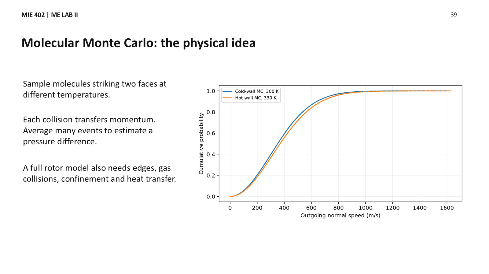
Explanation
Save the original clips, passage CSVs, measured delays, switch frames and completed log.
Check that the startup and light-off switch frames and both delayed observation times are recoverable.
Review one rpm trace and the late lamp-on comparison. Lab 6 report: December 7, 11:59 PM.